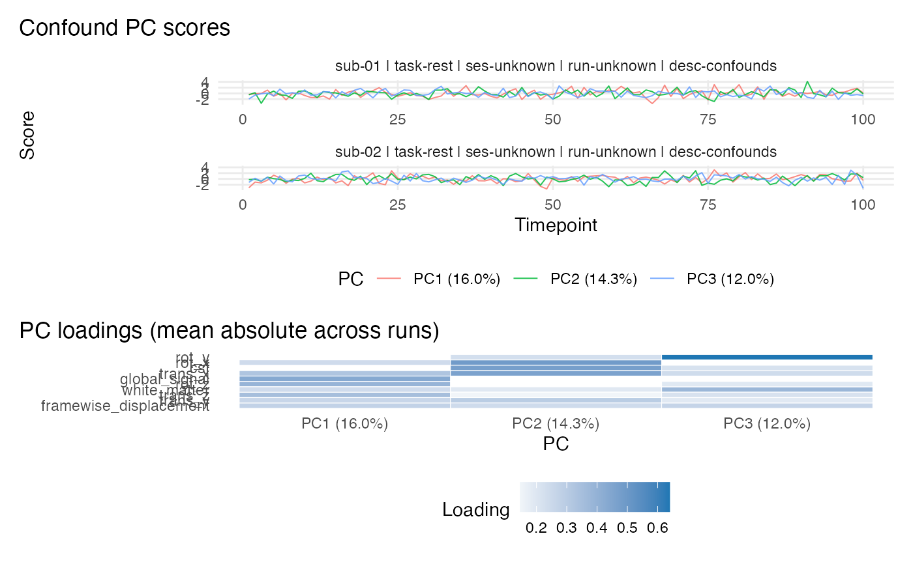

Visualize principal component scores and loadings returned by
read_confounds(..., npcs = ...). When multiple runs are present,
the default view facets per run for scores (up to max_panels) and
aggregates loadings across runs.
Arguments
- x
A
bids_confoundsobject returned byread_confounds().- view
Character. One of
"auto","run", or"aggregate".- pcs
Integer or character vector of PCs to plot (e.g.,
1:5orc("PC1", "PC2")).- top_n
Integer. Keep the top
top_nvariables per PC based on absolute loading. Set toNULLto keep all variables.- max_panels
Integer. In
view = "auto", facet score plots only when the number of runs is at mostmax_panels.- ...
Unused.
Examples
# \donttest{
parts <- c("01", "02")
fs <- tibble::tibble(
subid = rep(c("01", "02"), each = 2),
datatype = "func",
suffix = rep(c("bold.nii.gz", "desc-confounds_timeseries.tsv"), 2),
task = "rest", fmriprep = TRUE
)
conf_data <- list()
for (p in parts) {
key <- paste0("derivatives/fmriprep/sub-", p,
"/func/sub-", p, "_task-rest_desc-confounds_timeseries.tsv")
conf_data[[key]] <- data.frame(
csf = rnorm(100), white_matter = rnorm(100),
global_signal = rnorm(100), framewise_displacement = abs(rnorm(100)),
trans_x = rnorm(100), trans_y = rnorm(100), trans_z = rnorm(100),
rot_x = rnorm(100), rot_y = rnorm(100), rot_z = rnorm(100)
)
}
mock <- create_mock_bids("ConfPlot", parts, fs, confound_data = conf_data)
conf <- read_confounds(mock, npcs = 3)
if (requireNamespace("ggplot2", quietly = TRUE)) {
plot(conf)
}

# }